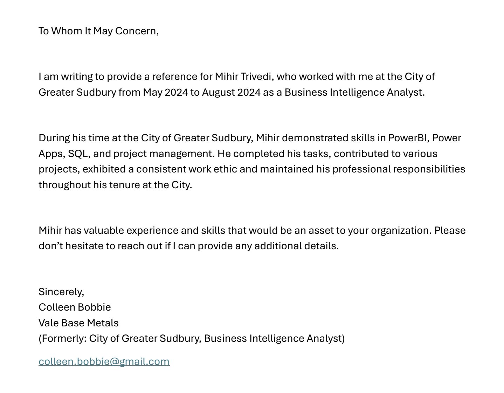

Sudbury, Ontario
Canadian PR
IT-02 · FC-05 range
PL-300 · PL-400 · AZ-900
Federal Public Service Portfolio
Data infrastructure that public institutions depend on
BI Developer and IT Data Analyst with 8+ years designing databases, building data pipelines, developing software, and maintaining data models across public sector, health tech, mining, and enterprise environments. Currently based in Sudbury, Ontario and available for hybrid federal roles.
Technical skills
A full-stack data and BI toolkit
Built across six employers in four industries — public sector, health tech, mining, and enterprise commerce.
Work history
Eight years across six employers — highlights and impact
From a 4-person research lab to a 13-platform global enterprise rollout, with public sector, health tech, and mining between.
- Designed and built the company's first PostgreSQL and dbt data warehouse — unified Finance, QA, Production, and HR into one governed source of truth.
- Built and maintained ETL/ELT pipelines integrating Salesforce, HubSpot, ZoomInfo, and Lead Forensics CRM data, with validation and cleaning at each stage.
- Automated Tableau reporting and built predictive inventory models, cutting manual reporting overhead by 40% in a regulated medical-device environment.
- Iterated the data model as business requirements evolved — updated fact and dimension tables, enforced data quality, and documented all pipeline logic in Confluence.
- Integrated the PreHos emergency-response platform with SQL Server using SSIS, Python, and Cloud SQL Auth Proxy for secure service-to-service data flows.
- Maintained pipelines supporting 911 call reporting and Opioid Response Ministry submissions — data quality errors carry direct community-safety consequences.
- Built Service-Based Budgeting reports in Power BI and delivered information management training to municipal staff on data quality and governance practices.
- Single-handedly designed and shipped the LoopX Safe and Smart Mining Data Platform — backend pipelines, REST APIs, and real-time safety dashboards.
- Tuned the data delivery layer for low-latency display so underground equipment operators could act on hazards as they developed.
- Designed the full underlying data model and pipeline architecture from scratch to production.
- Built an offline-first React Native app for Vale that collects underground inspection data with no network and syncs to the database on reconnect with full data-integrity validation.
- Implemented Microsoft Dynamics CRM workflows and Power Automate pipelines — reduced engineer compliance reporting from 5 hours to minutes.
- Ran UAT and production rollout across active mining sites, coordinating with stakeholders to confirm data accuracy under industrial conditions.
- Developed Random Forest classification models for gold prospectivity mapping — 99.5% F1 score on geological survey data.
- Processed and cleaned large geospatial datasets in Python, ArcGIS, and QGIS for mineralization probability mapping across the Superior province.
- Co-authored peer-reviewed publication in Ore Geology Reviews; presented findings at AICMSE 2023 at Harvard Faculty Club, Boston.
- Led a 4-engineer team on Edgepark — a high-traffic B2C medical commerce platform — owning solution design, data requirements, and release management.
- Launched 13 B2B commerce platforms across Europe and North America on SAP Hybris, handling multi-language and multi-currency database and integration requirements.
- Built secure user management and order business logic in Java Spring MVC and Hibernate behind REST APIs; owned CI/CD pipeline across all releases.
Why federal BI and data roles
Public-sector data work needs reliability above all else
Private-sector BI optimizes for speed. Federal BI work optimizes for accuracy, governance, and auditability — which is exactly where my background applies.
Application narrative
I build data infrastructure that institutions trust to make decisions.
At the City of Greater Sudbury, I owned pipelines feeding 911 emergency call reporting and Opioid Response Ministry submissions. Accuracy there wasn't a business KPI — it was a public-safety requirement. That experience trained me to treat data quality as non-negotiable.
At Flosonics Medical, I built a regulated medical-device data environment where every number feeding a Finance or QA dashboard had to be traceable to its source. I defined the data model, documented the transformation logic, maintained the pipelines, and supported stakeholders across four departments.
I am Sudbury-based, experienced with government reporting requirements, and comfortable working inside structured, governance-first environments. That combination is directly applicable to federal public service BI and data roles.
BI development
Dashboards, semantic models, DAX measures, and self-service analytics delivered in Power BI and Tableau across four industries.
Database design
PostgreSQL, SQL Server, dbt-managed models, star schema, dimensional thinking, and governed access patterns.
Data quality
Validation, cleaning, transformation, schema drift monitoring, exception handling, and quality enforcement in regulated environments.
Stakeholder delivery
Translated business requirements into data models, wrote technical documentation, delivered training, and communicated effectively with non-technical audiences.
Requirement matrix
How my experience maps to federal data role requirements
BI solutions (dashboards, reports, models)
Power BI and Tableau dashboards at Flosonics, City of Sudbury, and LoopX; semantic models with DAX and dbt; executive and operational reporting.
Database design & data modeling
PostgreSQL warehouse at Flosonics, SQL Server at City of Sudbury, dbt-managed fact and dimension tables, star schema design and governance.
ETL/ELT & data transformation
SSIS pipelines for Ministry reporting, Python ETL for CRM integration, dbt transformations — with validation and cleaning at every stage.
Software development
Java Spring, Python, React, REST APIs, CI/CD — from solo platform delivery at LoopX to 4-person enterprise teams at TCS.
Documentation & governance
Technical specs in Confluence, data dictionary maintenance, pipeline documentation, governance practices, and staff training at municipal level.
Stakeholder collaboration
Finance, QA, HR, Production, emergency services, municipal leadership, Ministry-level partners — requirements gathering, reporting, and training across all.
How I approach data work
A disciplined pipeline methodology, start to finish
Strong BI and data work requires more than building reports. It requires disciplined source analysis, clean transformation logic, validation, documentation, and ongoing support across the full model lifecycle.
Source mapping
Inventory source systems, data owners, refresh schedules, business definitions, integration constraints, and security requirements.
Pipeline design
Build repeatable ingestion, transformation, cleaning, and validation flows using SQL, Python, SSIS, and dbt warehouse patterns.
Model & BI build
Maintain entities, facts, dimensions, KPI logic, semantic models, and dashboards aligned to business reporting needs.
Quality control
Monitor duplicates, missing records, schema drift, failed loads, definition inconsistencies, and exception reporting.
Enhancement
Optimize performance, improve reliability, troubleshoot issues, and recommend changes as business requirements evolve.
Active applications
Federal roles I am applying for
This portfolio is shared as supporting context for the following positions. Role fit is detailed in the sections above.
Closing Jun 29, 2026
PR eligible
IT Data Analyst, IT Software Solutions — IT-02
Federal Economic Development Agency for Northern Ontario (FedNor)
Sudbury, Ontario · Salary $85,854–$105,080 · Reference NOR26J-170807-000054
Essential requirements
- Recent experience in database design
- Recent experience in data modeling
- Recent experience in software development
- Education: 2-year post-secondary in CS, IT, or related
My direct evidence
- PostgreSQL + dbt warehouse at Flosonics (2024–2026)
- SQL Server + SSIS pipelines at City of Sudbury (2024)
- LoopX platform, Minax React Native app, TCS enterprise (2017–2025)
- Master of Computational Science, Laurentian University (2023)
Closing Jul 6, 2026
⚠ Citizens only
Business Intelligence Developer — FC-05 (IT-02 comparable)
Financial Transactions and Reports Analysis Centre of Canada (FINTRAC)
Ottawa, Ontario · Salary $88,955–$110,940 · Reference CFC26J-183438-000002
⚠ Eligibility note: This posting requires Canadian Citizenship and a Top Secret security clearance. Confirm your citizenship status before submitting. This section is included for reference only.
Essential requirements
- 2+ years developing BI solutions (dashboards, reports, semantic models)
- Experience with structured and unstructured data sources
- Stakeholder collaboration on data and reporting requirements
- BI product documentation experience
My direct evidence
- Power BI and Tableau dashboards at Flosonics and City of Sudbury
- PostgreSQL, SQL Server, data warehouse, and data lake experience
- Finance, QA, HR, emergency-services stakeholder reporting
- Confluence technical docs, pipeline specs, staff training
Recommendations
What people say about my work
LinkedIn recommendations from colleagues and managers across recent roles.
Arash Mahmoudhashemi

Caleb Chin

Isabelle Falzon

Yash Sonani

References
People who can speak to ownership and delivery
Colleen Bobbie

Kshitija Suryavanshi

Walter Rondon

Certifications
Technical proof points

Microsoft
Power BI Data Analyst Associate, PL-300
Data modelling, semantic logic, DAX measures, dashboards, and stakeholder analytics.

Microsoft
Azure Fundamentals, AZ-900
Cloud data concepts, identity, governance, infrastructure awareness, and modern data platforms.

Microsoft
Power Platform Developer Associate, PL-400
Dynamics 365 development, Power Automate, business applications, and system integration.

Salesforce
Agentforce Specialist, AI-201
CRM-connected data, automation, and safe AI-enabled enterprise data workflows.
Contact
Available for federal BI and data roles — hybrid or remote
Happy to discuss my experience in database design, BI development, data pipelines, data quality, software development, and public-sector reporting in the context of your team's needs.